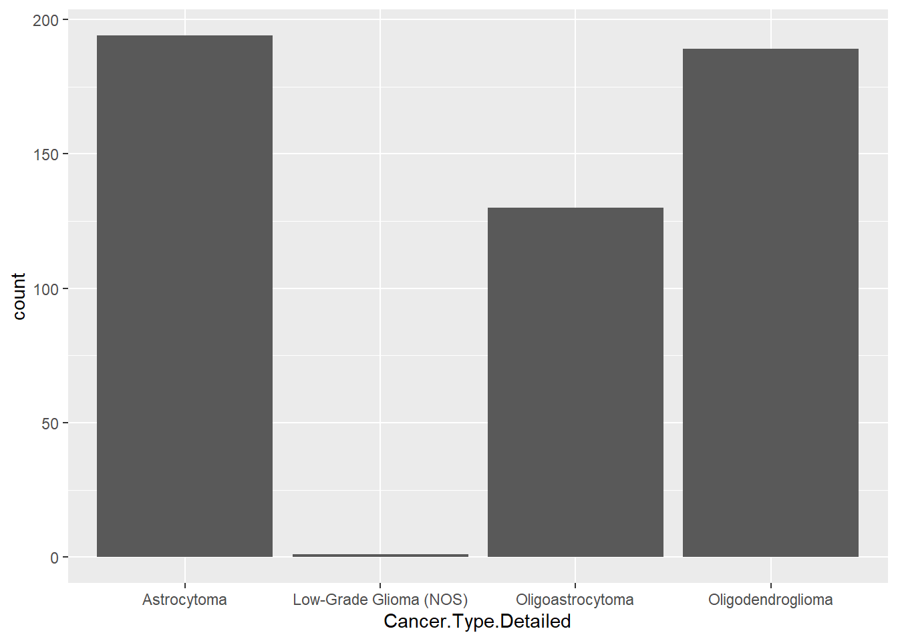
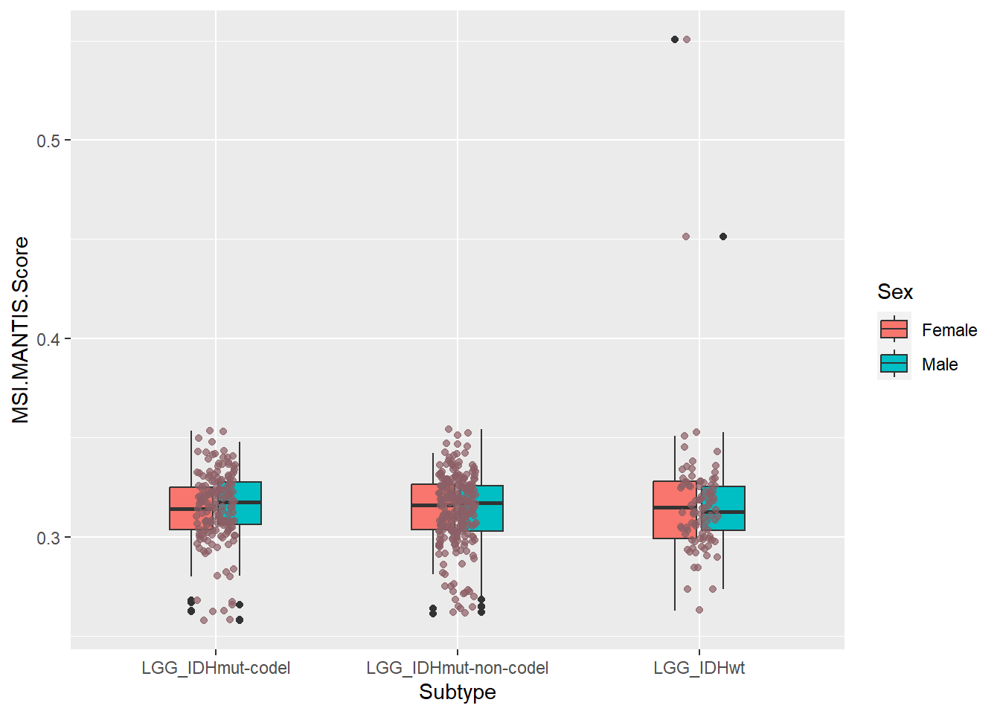
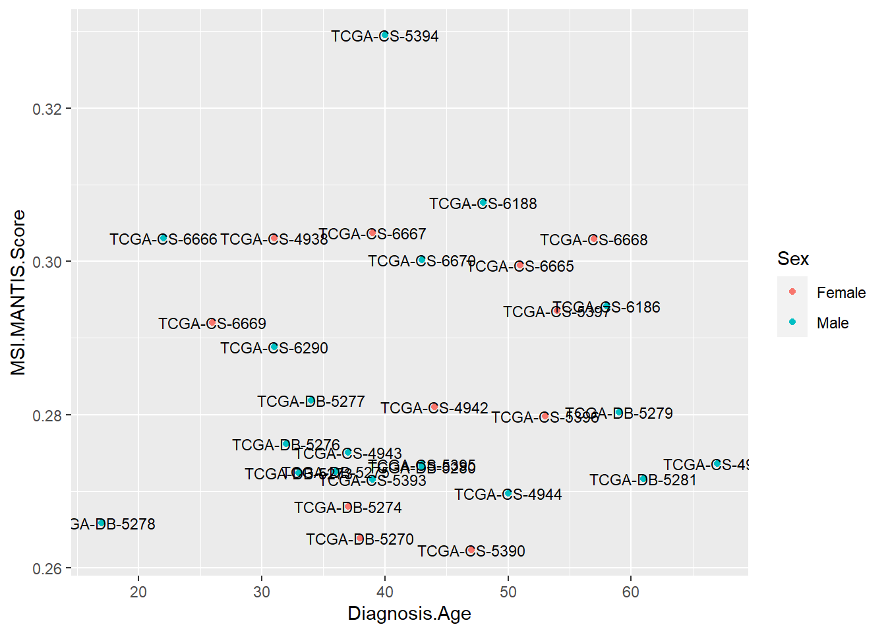

Code
LGG <- read.delim("data/lgg_tcga_pan_can_atlas_2018_clinical_data.tsv")Data source: CBioPortal, TCGA, LGG
LGG <- read.delim("data/lgg_tcga_pan_can_atlas_2018_clinical_data.tsv")`ggplot` implements a new grammar for plotting. Uses building blocks to create the final plot:
data
aesthetic mapping
geometric object
statistical transformations
scales
coordinate system
position adjustments
faceting
Resources: Cheat sheet, Function reference, R graph gallery
Empty graph, no aesthetics and geoms are added:
ggplot(LGG)
Let’s add some
ggplot(LGG)+
geom_point(aes(x = Diagnosis.Age, y=MSI.MANTIS.Score))Now add additional layers of information:
ggplot(LGG)+
geom_point(aes(x = Diagnosis.Age, y=MSI.MANTIS.Score, color=Sex))Now add statistics:
p <- ggplot(LGG,aes(x = Diagnosis.Age, y=MSI.MANTIS.Score))
p +
geom_point()+
stat_smooth(method = "lm", formula = y ~ x, se=T, level=0.95)#this can also be used as geom_smoothAlso additional geoms:
lm_p <- function(lm){
e <- summary(lm)
return(round(e$coefficients[2,4], 2))
}
ggplot(LGG,aes(x = Diagnosis.Age, y=MSI.MANTIS.Score))+
geom_point()+
stat_smooth(method = "lm", formula = y ~ x, se=T, level=0.95) +
geom_text(x = 20, y = 0.5, label = paste("P value:", lm_p(lm(MSI.MANTIS.Score ~ Diagnosis.Age, LGG))))p +
geom_point(aes(size = 2),# incorrect! 2 is not a variable
color="red") # this is fine -- all points redWarning: Removed 4 rows containing missing values (`geom_point()`).p +
geom_point(aes(size = Aneuploidy.Score),# incorrect! 2 is not a variable
color="red")Warning: Removed 11 rows containing missing values (`geom_point()`).p +
geom_point(aes(color=Sex, shape = Cancer.Type.Detailed))Warning: Removed 4 rows containing missing values (`geom_point()`).p2 <- ggplot(LGG, aes(x = Cancer.Type.Detailed))
p2 + geom_bar(aes(y=Aneuploidy.Score),stat="identity")Warning: Removed 7 rows containing missing values (`position_stack()`).
p2 + geom_bar(stat = "count")
LGG.sum <- aggregate(LGG["Aneuploidy.Score"], LGG["Cancer.Type.Detailed"], FUN=mean, na.rm=T)
ggplot(LGG.sum, aes(x=Cancer.Type.Detailed, y=Aneuploidy.Score)) +
geom_bar(stat="identity")LGG %>%
filter(!is.na(Race.Category)) %>%
mutate(categories="Race") %>%
ggplot() +
geom_bar(aes(x=categories, fill=Race.Category))LGG %>%
filter(!is.na(Race.Category)) %>%
mutate(categories="Race") %>%
ggplot() +
geom_bar(aes(x=categories, fill=Race.Category), position = "dodge2")LGG %>%
filter(!is.na(Subtype)) %>%
ggplot(aes(x = Subtype, y=MSI.MANTIS.Score))+
geom_boxplot(width=0.4, fill="lightpink") +
geom_jitter(width = 0.08, alpha=0.7, color="lightpink4")Warning: Removed 3 rows containing non-finite values (`stat_boxplot()`).Warning: Removed 3 rows containing missing values (`geom_point()`).LGG %>%
filter(!is.na(Subtype)) %>%
ggplot() + geom_boxplot(aes(x = Subtype, y=MSI.MANTIS.Score),width=0.4, fill="lightpink") Warning: Removed 3 rows containing non-finite values (`stat_boxplot()`).#LGG %>%
# filter(!is.na(Subtype)) %>%
# ggplot() + geom_boxplot(aes(x = Subtype, y=MSI.MANTIS.Score),width=0.4, fill="lightpink") + geom_jitter(width = 0.08, alpha=0.7, color="lightpink4")
LGG %>%
filter(!is.na(Subtype) & !is.na(Sex)) %>%
ggplot() + geom_boxplot(aes(x = Subtype, y=MSI.MANTIS.Score, fill=Sex),width=0.4) + geom_jitter(aes(x = Subtype, y=MSI.MANTIS.Score), width = 0.08, alpha=0.7, color="lightpink4")Warning: Removed 3 rows containing non-finite values (`stat_boxplot()`).
Removed 3 rows containing missing values (`geom_point()`).
ggplot(LGG,aes(x = Diagnosis.Age, y=MSI.MANTIS.Score))+
geom_point(aes(color=Sex))+
stat_smooth(method = "lm", formula = y ~ x, se=T, level=0.95) +
scale_y_continuous(limits=c(0.2, 0.4))ggplot(LGG,aes(x = Diagnosis.Age, y=MSI.MANTIS.Score))+
geom_point(aes(color=Sex))+
stat_smooth(method = "lm", formula = y ~ x, se=T, level=0.95) +
scale_y_continuous(limits=c(0.2, 0.4))+
scale_x_continuous(name="Age of diagnosis", breaks = c(0,10,50,60,100), labels = c(0,10,50,60,100), limits = c(0,100), position = "top")ggplot(LGG,aes(x = Diagnosis.Age, y=MSI.MANTIS.Score))+
geom_point(aes(color=Sex))+
stat_smooth(method = "lm", formula = y ~ x, se=T, level=0.95) +
scale_color_brewer(palette = "Set2")LGG %>%
filter(!is.na(Subtype) & !is.na(Sex)) %>%
ggplot() + geom_boxplot(aes(x = Subtype, y=MSI.MANTIS.Score, fill=Sex),width=0.4) +
geom_jitter(aes(x = Subtype, y=MSI.MANTIS.Score), width = 0.08, alpha=0.7)+
scale_fill_brewer(palette = "Set2")LGG %>%
filter(!is.na(Subtype) & !is.na(Sex)) %>%
ggplot() + geom_boxplot(aes(x = Subtype, y=MSI.MANTIS.Score, fill=Sex),width=0.4) +
geom_jitter(aes(x = Subtype, y=MSI.MANTIS.Score, color=Sex), width = 0.08, alpha=0.7)+
scale_fill_manual(values = c("orange", "blue"))+scale_color_manual(values = c("red", "yellow"))LGG %>%
filter(!is.na(Sex)) %>%
ggplot(aes(x = Diagnosis.Age, y=MSI.MANTIS.Score))+
geom_point(aes(color=Sex))+
stat_smooth(method = "lm", formula = y ~ x, se=T, level=0.95) +
scale_color_brewer(palette = "Set1")+
theme_bw()+
facet_wrap(~ Sex)LGG %>%
filter(!is.na(Race.Category)) %>%
mutate(categories="Race") %>%
ggplot() +
geom_bar(aes(x=categories, fill=Race.Category)) +
coord_flip() +
theme_minimal() +
theme(aspect.ratio=0.2, axis.title.y = element_blank())+
ggtitle("Stacked bar plot")+
scale_fill_futurama(name="Race category")LGG %>%
filter(!is.na(Race.Category)) %>%
mutate(categories="Race") %>%
ggplot() +
geom_bar(aes(x=categories, fill=Race.Category)) +
coord_fixed(ratio=0.2) +
theme_minimal() +
theme(aspect.ratio=0.2, axis.title.y = element_blank())+
ggtitle("Stacked bar plot")+
scale_fill_futurama(name="Race category")p <- ggplot(LGG,aes(x = Diagnosis.Age, y=MSI.MANTIS.Score))+
geom_point(aes(color=Sex))+
stat_smooth(method = "lm", formula = y ~ x, se=T, level=0.95) +
scale_color_brewer(palette = "Set2")
p + theme_linedraw()Warning: Removed 4 rows containing non-finite values (`stat_smooth()`).Warning: Removed 4 rows containing missing values (`geom_point()`).p + theme_light()Warning: Removed 4 rows containing non-finite values (`stat_smooth()`).Warning: Removed 4 rows containing missing values (`geom_point()`).Specific theme elements can be overridden using theme(). For example:
p + theme_minimal() +
theme(text = element_text(color = "turquoise"))Warning: Removed 4 rows containing non-finite values (`stat_smooth()`).Warning: Removed 4 rows containing missing values (`geom_point()`).All theme options are documented in ?theme.
You can create new themes, as in the following example:
theme_new <- theme_bw() + theme(plot.background = element_rect(linewidth = 1, color = "blue", fill = "black"), text=element_text(size = 12, color = "aquamarine"), axis.text.y = element_text(colour = "purple"), axis.text.x = element_text(colour = "red"), panel.background = element_rect(fill = "pink"), strip.background = element_rect(fill = "orange"))
p + theme_newWarning: Removed 4 rows containing non-finite values (`stat_smooth()`).Warning: Removed 4 rows containing missing values (`geom_point()`).
p + theme_newWarning: Removed 4 rows containing non-finite values (`stat_smooth()`).Warning: Removed 4 rows containing missing values (`geom_point()`).ggsave(filename = "figures/nice_plot.pdf")Saving 7 x 5 in imageWarning: Removed 4 rows containing non-finite values (`stat_smooth()`).
Removed 4 rows containing missing values (`geom_point()`).g <- p + theme_new
ggsave(g, filename = "figures/nice_plot.pdf", width = 5, height = 9)Warning: Removed 4 rows containing non-finite values (`stat_smooth()`).
Removed 4 rows containing missing values (`geom_point()`).#|wwarning: false
p1 <- ggplot(LGG,aes(x = Diagnosis.Age, y=MSI.MANTIS.Score))+
geom_point(aes(color=Sex))+
stat_smooth(method = "lm", formula = y ~ x, se=T, level=0.95) +
scale_y_continuous(limits=c(0.2, 0.4))+
scale_x_continuous(name="Age of diagnosis", breaks = c(0,10,50,60,100), labels = c(0,10,50,60,100), limits = c(0,100), position = "top")
p2 <- ggplot(LGG,aes(x = Diagnosis.Age, y=Aneuploidy.Score))+
geom_point(aes(color=Sex))+
stat_smooth(method = "lm", formula = y ~ x, se=T, level=0.95) +
scale_x_continuous(name="Age of diagnosis", breaks = c(0,10,50,60,100), labels = c(0,10,50,60,100), limits = c(0,100), position = "top")
plot_grid(p1, p2, labels = c('A', 'B'), label_size = 12)Warning: Removed 6 rows containing non-finite values (`stat_smooth()`).Warning: Removed 6 rows containing missing values (`geom_point()`).Warning: Removed 8 rows containing non-finite values (`stat_smooth()`).Warning: Removed 8 rows containing missing values (`geom_point()`).plot_grid(p1, p2, labels = c('A', 'B'), label_size = 12, rel_widths = c(3,2))Warning: Removed 6 rows containing non-finite values (`stat_smooth()`).Warning: Removed 6 rows containing missing values (`geom_point()`).Warning: Removed 8 rows containing non-finite values (`stat_smooth()`).Warning: Removed 8 rows containing missing values (`geom_point()`).plot_grid(p1, p2, p2, labels = c('A', 'B', 'C'), label_size = 12, rel_widths = c(3,2,2), nrow = 2)Warning: Removed 6 rows containing non-finite values (`stat_smooth()`).Warning: Removed 6 rows containing missing values (`geom_point()`).Warning: Removed 8 rows containing non-finite values (`stat_smooth()`).Warning: Removed 8 rows containing missing values (`geom_point()`).Warning: Removed 8 rows containing non-finite values (`stat_smooth()`).Warning: Removed 8 rows containing missing values (`geom_point()`).LGG %>%
filter(!is.na(Race.Category)) %>%
mutate(categories="Race") %>%
ggplot() +
geom_bar(aes(x=categories, fill=Race.Category), position = "dodge2")+
scale_fill_lancet()LGG %>%
filter(!is.na(Race.Category)) %>%
mutate(categories="Race") %>%
ggplot() +
geom_bar(aes(x=categories, fill=Race.Category), position = "dodge2")+
scale_fill_manual(values = ggsci::pal_lancet()(4))
ggplot(LGG[1:30,],aes(x = Diagnosis.Age, y=MSI.MANTIS.Score))+
geom_point(aes(color=Sex))+geom_text(aes(label=Patient.ID), size=3)
ggplot(LGG[1:30,],aes(x = Diagnosis.Age, y=MSI.MANTIS.Score))+
geom_point(aes(color=Sex))+geom_text_repel(aes(label=Patient.ID), size=3)Density plot
ggplot(LGG) +
geom_density(aes(Diagnosis.Age, fill=Sex))+theme_bw()+ ggtitle("Density plot")+xlab("Age at diagnosis")Warning: Removed 1 rows containing non-finite values (`stat_density()`).ggdensity(LGG, x = "Diagnosis.Age",
add = "mean", rug = TRUE,
color = "Sex", fill = "Sex",
palette = c("#00AFBB", "#E7B800"))Warning: Removed 1 rows containing non-finite values (`stat_density()`).Warning: Removed 1 rows containing missing values (`geom_vline()`).Histogram
ggplot(LGG) +
geom_histogram(aes(Diagnosis.Age, fill="Sex"), color="black")+theme_bw()+ ggtitle("Histogram")+xlab("Age at diagnosis")`stat_bin()` using `bins = 30`. Pick better value with `binwidth`.Warning: Removed 1 rows containing non-finite values (`stat_bin()`).
gghistogram(LGG, x = "Diagnosis.Age",
add = "mean", rug = TRUE,
color = "Sex", fill = "Sex",
palette = pal_lancet()(2))Warning: Using `bins = 30` by default. Pick better value with the argument
`bins`.
Warning: Removed 1 rows containing non-finite values (`stat_bin()`).Warning: Removed 1 rows containing missing values (`geom_vline()`).gghistogram(LGG, x = "Diagnosis.Age",
add = "mean", rug = TRUE,
color = "Sex", fill = "Sex",facet.by = "Cancer.Type.Detailed",
palette = pal_lancet()(2))Warning: Using `bins = 30` by default. Pick better value with the argument
`bins`.Warning: Removed 1 rows containing non-finite values (`stat_bin()`).Warning: Removed 1 rows containing missing values (`geom_vline()`).e <- LGG %>%
filter(!is.na(Subtype)) %>%
ggplot(aes(x = Subtype, y=MSI.MANTIS.Score))
e + geom_boxplot(aes(fill=Sex), width=0.4) + geom_point(aes(color=Sex),width = 0.08, alpha=0.7, position = position_jitterdodge(jitter.width=0.2, dodge.width = 0.5)) +
theme_bw()+
scale_x_discrete(labels=c("LGG_IDHwt" = "IDH WT", "LGG_IDHmut-non-codel" = "IDH mutant, not 1p/19q codel", "LGG_IDHmut-codel" = "IDH mutant, 1p/19q codel")) +
ylab("MSI Mantis Score")+
theme(axis.title.x = element_blank())p <- LGG %>%
filter(!is.na(Subtype)) %>%
mutate(Subtype=factor(Subtype)) %>%
ggboxplot( x = "Subtype", y = "MSI.MANTIS.Score", color="Subtype", palette =pal_lancet()(4),
add = "jitter")
my_comparisons <- combn(levels(factor(LGG$Subtype)), m = 2, simplify = F)[1:3]
p + stat_compare_means(comparisons = my_comparisons)+ # Add pairwise comparisons p-value
stat_compare_means(label.y = 0.5) p <- ggscatter(LGG[1:30,], x = "Diagnosis.Age", y = "MSI.MANTIS.Score",
color = "Subtype", palette = c("#00AFBB", "#E7B800", "#FC4E07"),
label = "Patient.ID", repel = TRUE)
p + theme(text=element_text(colour = "aquamarine"))ge <- readRDS("data/LGG_GE_small_mat.RDS")
ge_t <- ge[1:3,]
ge_t %>%
as.data.frame() %>%
rownames_to_column(var="Gene") %>%
pivot_longer( cols = !Gene, names_to = "Patient.ID") %>%
ggplot(aes(x=Patient.ID, y=Gene))+geom_tile(aes(fill=value))+theme(axis.text.x = element_blank(), axis.ticks.x = element_blank())